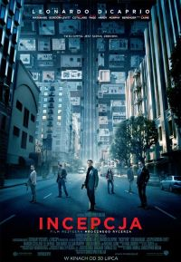

Incepcja
amerykański film akcji science-fiction z 2010 roku. Zdobywca 4 Oscarów za najlepsze: zdjęcia, dźwięk, montaż dźwięku i efekty specjalne. Twórcą i reżyserem filmu jest Christopher Nolan. Scenariusz do filmu otrzymał nagrodę Hugo w kategorii najlepsza prezentacja dramatyczna (długa forma) w 2011 rokuFilm opowiada o możliwościach ingerowania w ludzki umysł dzięki zaawansowanej technologii umożliwiającej wpływ na marzenia senne. Głównym bohaterem filmu jest Cobb (Leonardo DiCaprio) – szef zespołu specjalizującego się w dokonywaniu włamań do snów innych osób. Dzięki tej możliwości może zarówno pozyskiwać informacje, jak i wprowadzać nowe dane. Najważniejszym i ostatnim zadaniem zespołu Cobba jest wywołanie wpływu na umysł następcy właściciela ogólnoświatowego koncernu. Zadanie wymaga wielopiętrowego zagłębienia się w meandry umysłu ofiary (sen we śnie), a przeszkodą jest projekcja podświadomości Cobba w postaci jego żony o imieniu Mal, o której śmierć się obwinia.

tekst pochodzi z Wikipedii